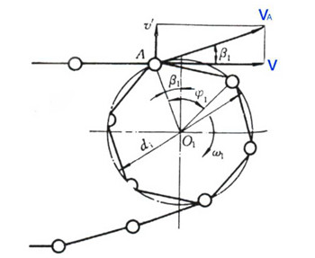

如图1所示，为链传动中的主动轮，该轮沿顺时针方向转动，角速度为ω。假设主动边总是处于水平位置，并把链轮抽象成正多变形，令其变成为p。
图1 链传动运动分析
那么，点A的切向速度
υA=ω1d1/2
其水平方向的分速度则为
υ=υAcosβ1=ω1d1cosβ1/2
由于β1的大小是在不断变化的，所以链的水平移动速度是在不断变化。因此在链传动的过程中会不断的产生冲击、振动和噪声。另外，链条径向的速度变化也是链传动不平稳的原因之一。
我们很容易知道β1取值范围为-ϕ1/2~ ϕ1/2，而ϕ1=360°/z1，所以随着轮齿数的减少，ϕ1变大，最终v的变化范围也会变大，导致链传动的运动不平稳性变大。所以，一般来说链轮齿数不会小于11。